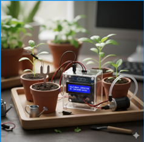
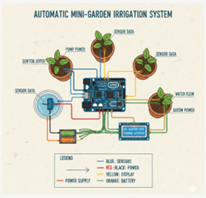

Sua horta VIVA, mesmo sem você. Nosso sistema inteligente detecta quando a planta precisa de água e faz a rega automática no momento exato. Menos desperdício, zero esforço e liberdade para viver enquanto sua horta cresce sozinha.

Com o FloraSync, sua horta se conecta ao celular.
Sensores monitoram a umidade de cada vaso em tempo real e ativam a rega automática apenas quando necessário.
Controle tudo pelo app, acompanhe o histórico e viaje tranquilo com o modo férias.